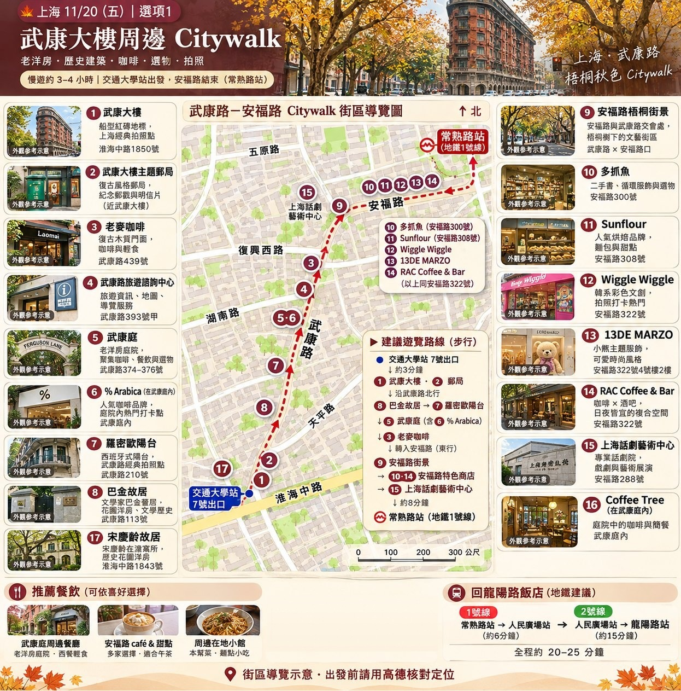

☕ 早餐｜已找到具名餐廳（營業時間需當日再查）永和大王（龍陽路店）
地址：上海市浦東新區龍陽路2000號龍陽廣場F1
營業時間：06:00–22:00（公開地圖參考，出發前再確認）
推薦餐食／單品價格：早餐鮮肉小餛飩、豆漿、油條、蛋餅；單品價以現場菜單為準
人均消費：約 ¥20／人（攜程平台用戶參考）
順路原因：龍陽路住宿區附近，上午去銀行辦事前先吃；店家位於龍陽廣場F1。

上午銀行業務後，下午從七條主線選一條；目前核准水彩原圖為武康路這條，圖內餐廳與探店資料保留。其他選項須另外驗收彩繪原圖。
依辦事結束時間選一條路線，不必記工程編號。
武康大樓・武康路・安福路 Citywalk原核准17站彩繪｜沿路咖啡、甜點、探店思南公館・思南路公館建築與梧桐街景新天地北里石庫門巷弄與餐飲上生新所孫科別墅與園區愚園路・靜安寺歷史街區、選物與咖啡上海植物園植物園步道、溫室豫園・九曲橋・城隍廟古典園林與小吃上午先辦理銀行業務；下午依結束時間選一條主線。武康庭與安福路已包含在選項01，不重複列項。
今日路線：上午辦事；下午依所選七條上海路線。不為用餐額外折返；「高德」開啟後請確認分店並按路線導航。
地址：上海市浦東新區龍陽路2000號龍陽廣場F1
營業時間：06:00–22:00（公開地圖參考，出發前再確認）
推薦餐食／單品價格：早餐鮮肉小餛飩、豆漿、油條、蛋餅；單品價以現場菜單為準
人均消費：約 ¥20／人（攜程平台用戶參考）
順路原因：龍陽路住宿區附近，上午去銀行辦事前先吃；店家位於龍陽廣場F1。
順路理由：選武康路線才適用；咖啡甜點非完整正餐
推薦餐點與單價：推薦餐點：蒙布朗栗子／招牌咖啡；單品售價待店家菜單確認
人均消費：人民幣 ¥55/人（平台參考）
營業時間：舊資料：平日08:00–21:00、假日07:00–21:00；2026待核
位置：上海市徐匯區武康路439號 老麦咖啡馆
順路理由：選武康路／安福路路線時才順路；晚餐供應與廚房收單時間須先確認
推薦餐點與單價：推薦餐點：法式可麗餅／早午餐；單品售價待店家菜單確認
人均消費：人民幣 ¥139/人（平台參考）
營業時間：網路參考週一至六08:00–22:30、週日08:00–16:30；待店方核實
位置：上海安福路322號 RAC BAR
「待查」並不代表店家已確認營業。人民幣人均數字為第三方平台近期參考，非餐點定價；優惠、座位、正確分店與當日營業以商家及高德／美團即時資訊為準。未指名餐廳的欄位是備案，不能當成已核實店家。
⌂ 返回日期主選單